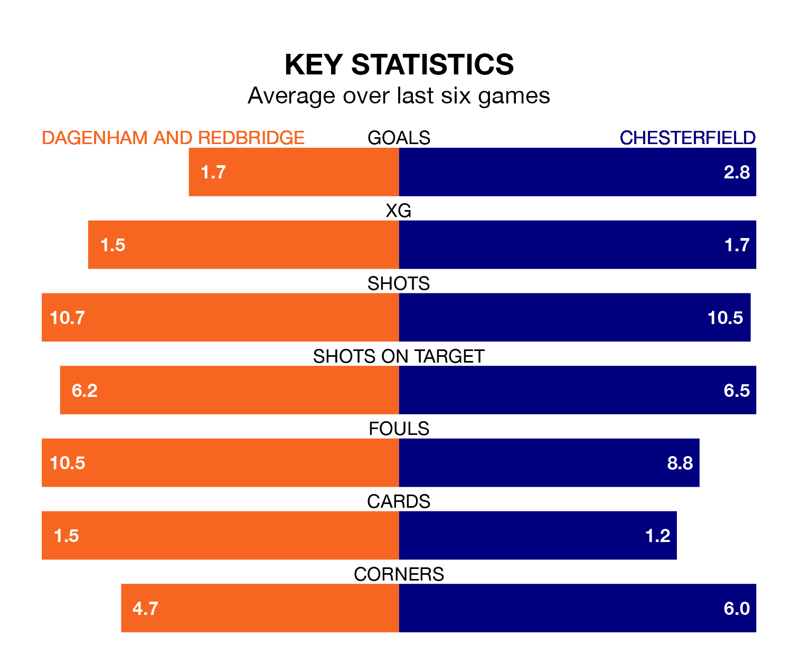

Chesterfield are strong favourites to take all three points despite Dagenham and Redbridge's home advantage in Tuesday's late match at the Chigwell Construction Stadium.
*Betting Company* are offering odds of 1.39 on Chesterfield sealing the win, with the visitors sitting first in the National League table.
Dagenham & Redbridge, who are 15th in the league and 40 points behind the Spireites, are priced at 6.36 to win. A draw is set at 4.95.
With 75 goals in 30 games so far this season, Chesterfield are the league's highest scorers with 2.5 goals per game. And they are conceding fewer than average, letting in 35 goals at a rate of 1.2 per game.
Dagenham & Redbridge, meanwhile, are below average scorers, with 1.3 goals per game, compared to a league average of 1.5. They have conceded 1.4 goals per game.
The home team are in mixed form in the National League, with two wins and two draws from their last six games.
With six wins and no losses over that period, the Spireites's form is much better – they have taken 18 points from 18, compared to Dagenham & Redbridge's eight.
In the last 10 years, Dagenham & Redbridge and Chesterfield have played each other on 10 occasions. Dagenham & Redbridge won one of them, Chesterfield five, and they drew four times.
On average, Dagenham & Redbridge scored 1.2 goals and the Spireites 1.8 in those matches.
Their last meeting was on September 9, when Chesterfield won 3-1 at home.
Dagenham & Redbridge's last match was on Saturday, a 2-1 win against Rochdale, with Inih Othneil Effiong getting the goals for Dagenham & Redbridge.
Chesterfield beat Eastleigh 3-1 last time out, also on Saturday, with James Berry-McNally, Liam Mandeville and Will Grigg on the scoresheet.
Updated: 10:28 (UTC), 06/02/24